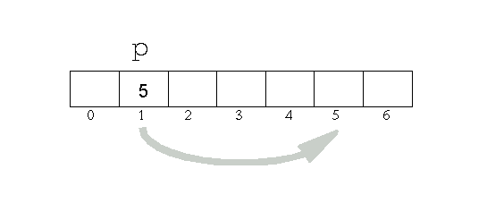
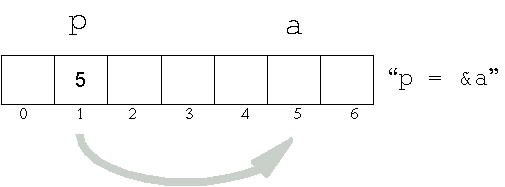
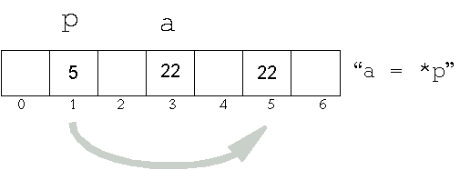
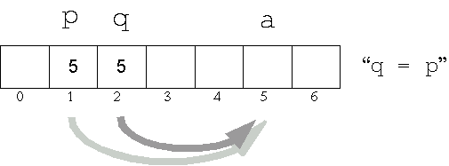
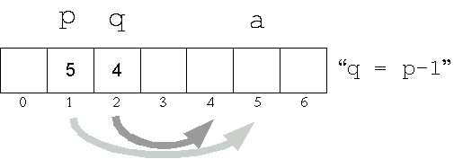
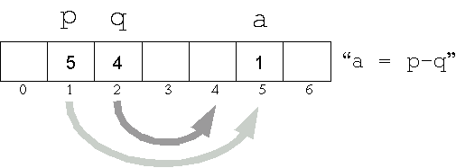
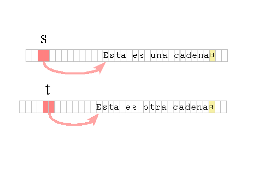
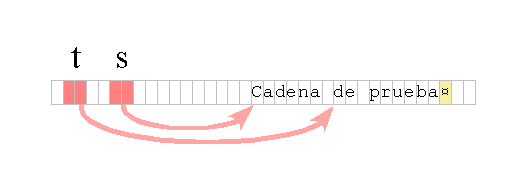

El tema de esta unidad es el más complejo del lenguaje C y por este motivo se han separado los contenidos en dos partes (llamadas 10 y 10b).
La memoria del computador está organizada como un vector o arreglo unidimensional. Los índices en este arreglo son las direcciones de memoria. Este arreglo puede accederse indexando a cada byte individualmente, y en particular a cada estructura de datos del programa, mediante su dirección de comienzo.
Para manipular direcciones se utilizan en C variables especiales llamadas apuntadores o punteros, que son aquellas capaces de contener direcciones. En la declaración de un apuntador se especifica el tipo de los objetos de datos cuya dirección contendrá.
La notación:
char *p;
es la declaración de una variable puntero a carácter. El contenido de la variable p puede ser, en principio, cualquiera dentro del rango de direcciones de la máquina subyacente al programa. Una vez habiendo recibido un valor, se dice que la variable p apunta a algún objeto en memoria.
Esquemáticamente representamos la situación de una
variable que contiene una dirección (y por lo tanto "apunta
a esa dirección") según el diagrama siguiente (mas información).
La
posición 1 de la memoria aloja un puntero que actualmente
apunta a la posición 5.

El tema de apuntadores (o punteros) y direcciones es crucial en la programación en C, y parece ser el origen más frecuente de errores. Programas con mala lógica de acceso a memoria pueden ser declarados válidos por el compilador: su compilación puede ser exitosa y sin embargo ser completamente erróneos en ejecución. Esta es una de las críticas más frecuentes al lenguaje C, aunque en rigor de verdad, el problema no es del lenguaje, sino del programador con una mala comprensión de las cuestiones del lenguaje relacionadas con memoria.
Las cuestiones fundamentales a entender para no caer en estos errores son los conceptos de direcciones y punteros, así como dominar la sintaxis de las declaraciones de punteros para asegurarse de que escribimos lo que se pretende lograr.
Para manipular punteros se hacen necesarios dos operadores especiales:
|
& |
Operador de dirección |
|---|---|
|
* |
Operador de indirección |
p = &a;
puede leerse: "asignar a p la dirección de a".

El operador de indirección, o de dereferenciación, surte el efecto contrario: accede al objeto apuntado por una dirección. La construcción
a = *p;
puede leerse "a es igual a lo apuntado por p".

Para tener el efecto lógicamente esperado, en las expresiones anteriores p deberá ser un puntero, capaz de recibir y entregar una dirección.
En general, si p = &a, la expresión de dereferenciación *p puede aparecer en cualquier contexto en el que apareciera a. En particular, es legal asignar indirectamente a través de un apuntador. Las instrucciones
int a, *p;
p = &a;
*p = 1;
equivalen a
a = 1;
Son operaciones legales asignar punteros entre sí, sumar algebraicamente un entero a un puntero y restar dos punteros. Las consecuencias de cada operación se esquematizan en las figuras siguientes.

Luego
de asignar un puntero a otro, ambos apuntan al mismo objeto.
Cualquier modificación al objeto apuntado por uno se refleja
al accederlo mediante el otro puntero.
La suma algebraica de una dirección más un entero es nuevamente una dirección. El sentido de la operación es desplazar el punto de llegada del apuntador (hacia arriba o hacia abajo en memoria) en tantas unidades como diga el entero, con la particularidad de que el resultado final es dependiente del tamaño del objeto apuntado. Esto es en general lo que desea el programador al aplicar un incremento a un apuntador.

Es
decir que sumar (o restar) una unidad a un puntero, lo
incrementa (decrementa) en tantos bytes como mida el objeto al cual
apunta.
Por ejemplo, para punteros a carácter, la instrucción p++ incrementa el valor del puntero en uno, que es el sizeof() de los chars; pero si p es un puntero a long, en una arquitectura donde los longs miden cuatro bytes, p++ incrementa el valor de p en cuatro (y p queda apuntando "un long más allá en memoria"). El cálculo realizado al tiempo de ejecución para la instrucción p+i, donde p es un puntero a tipo e i es un entero, es siempre p+i*sizeof(tipo).
El sentido de una resta de punteros (o, equivalentemente, de una diferencia de direcciones) es obtener el tamaño del área de memoria comprendida entre los objetos apuntados por ambos punteros. La resta tendrá sentido únicamente si se hace entre variables que apuntan a objetos del mismo tipo.

Nuevamente
se aplica la lógica del punto anterior: el resultado obtenido
quedará expresado en unidades del tamaño del objeto
apuntado. Es decir, si una diferencia entre punteros a long da
3, debe entenderse el resultado como equivalente a 3 longs,
y por lo tanto a 3*sizeof(long) bytes.
Una consecuencia de que sea posible sumar enteros a punteros es que se puede simular el recorrido de un arreglo mediante el incremento sucesivo de un puntero. La operación de acceder a un elemento del arreglo es equivalente a obtener el objeto apuntado por el puntero. Las sentencias:
int *p;
int a[10];
p = &a[0];
Habilitan al programador para acceder a cada elemento del arreglo a mediante aritmética sobre el puntero p. Como el nombre de un arreglo se evalúa a su dirección inicial, la última sentencia también puede escribirse simplemente así:
p = a;
Algunas manipulaciones con arreglos y punteros:
int alfa[] = { 2, 4, 6, 7, 4, 2, 3, 1 };
int *p, *q;
int b;
p = alfa; /* el nombre de un arreglo
equivale a su direccion */
*p = 3; /* equivalente a alfa[0] = 3 */
*(p+2) = 4; /* equivalente a alfa[2] = 4 */
b = *p; /* equiv. a b = alfa[0] */
*(p+3) = *(p+6); /* sobreescribe el 7 con el 3 */
q = alfa + 2; /* apunta al tercer elemento */
printf("%d\n",*q); /* imprime 4 */
printf ("%d\n",q - p); /* imprime 2 */
p += q; /* ERROR - la suma de punteros
no está definida */
Los dos segmentos siguientes realizan exactamente la misma tarea.
int i:
long tabla[10];
for(i = 0; i < 10; i++)
suma += tabla[i];
long *p;
long tabla[10];
for(p = tabla; p < tabla+10; p++)
suma += *p;
Posiblemente el caso más extendido del uso de punteros sea cuando se necesita trabajar con cadenas de texto, o strings. En C, éstas son análogos bastante cercanos de los arreglos de caracteres, aunque con diferencias importantes. En la inicialización de punteros, las constantes string son un caso especialmente frecuente.
Las constantes string son un caso particular de cadenas de texto: son todas aquellas secuencias de caracteres (eventualmente la secuencia vacía) entre comillas. Cuando el compilador C encuentra una constante string, copia los caracteres entre comillas encontrados a un espacio de almacenamiento y termina la secuencia de caracteres con un 0 binario (un byte con contenido binario 0). Esta representación interna se propagará al programa una vez instalado en memoria al momento de ejecución. El carácter cero final tiene la misión de funcionar como señal de terminación para aquellas funciones de biblioteca standard que manejan strings (copia de cadenas, búsqueda de caracteres, comparación de cadenas, etc.).
Gracias a esta representación, las cadenas no tienen una longitud máxima; pero es necesario cumplir con el protocolo de terminarlas con su cero final para poder utilizar las funciones que manipulan strings. Debido a esta representación interna algunas veces se las ve mencionadas con el nombre de cadenas ASCIIZ (caracteres ASCII seguidos de cero).
La segunda cosa que hace el compilador C con una constante string es reemplazar la referencia a la constante, en el texto bajo compilación, por la dirección del almacenamiento asignado. De esta manera, en el ejemplo, la inicialización de s y la asignación de t cargan a ambas variables con las direcciones del primer carácter, o direcciones iniciales, de las cadenas respectivas.
char *s = "Esta es una cadena";
char *t;
t = "Esta es otra cadena";
Representamos en el diagrama el carácter 0 final (que no es
imprimible) con el símbolo ¤.
La expresión en C de este carácter es simplemente 0 (un
entero) o '\0' (una constante carácter cuyo código
ASCII es cero).
La
función de biblioteca standard printf() permite
imprimir una cadena con el especificador de conversión %s.
Las líneas siguientes;
char *s = "Cadena de prueba";
char *t;
t = s + 7;
printf("%s\n", s);
printf("%s\n", t);
O bien, equivalentemente:
char *s = "Cadena de prueba";
printf("%s\n", s);
printf("%s\n", s + 7);

imprimen:
Cadena de prueba
de prueba
Una función que recorre una cadena ASCIIZ buscando un carácter y devuelve la primera dirección donde se lo halló, o bien el puntero nulo (NULL).
char *donde(char *p, char c)
{
for( ; *p != 0; p++)
if(*p == c)
return p;
return NULL;
}
main()
{
char *cadena = "Buscando exactamente esto";
char *s;
s = donde(cadena, 'e');
if(s != NULL)
printf("%s\n", s);
}
El ejemplo de uso imprime
exactamente esto
En C, donde todo pasaje de parámetros se realiza por valor, los punteros brindan una manera de entregar a las funciones referencias a objetos. El pasaje por referencia permite que una función pueda modificar un objeto que es local a otra función.
Un pasaje por referencia implica entregar la dirección del objeto.
Modificación de un objeto externo a una función.
La función f2() debe poner a cero una variable entera, por lo cual el argumento formal h debe ser la dirección de un entero.
void f2(int *h)
{
*h = 0;
}
int f1()
{
int j,k;
int *p;
p = &j;
f2(p); /* le pasamos una direccion */
f2(&k); /* y tambien aqui */
}
Uso incorrecto de argumentos pasados por valor.
void swap(int x, int y) /* incorrecta */
{
int temp;
temp = x;
x = y;
y= temp;
}
La función swap(), que podría ser usada por un algoritmo de ordenamiento para intercambiar los valores de dos variables, está incorrectamente escrita, ya que los valores que intercambia son los de sus argumentos, que vienen a estar al nivel de variables locales. El uso de la función swap() no tendrá efecto en el exterior de la misma. La versión correcta debe escribirse con pasaje por referencia:
void swap(int *x, int *y) /* correcta */
{
int temp;
temp = *x;
*x = *y;
*y = temp;
}
La invocación de swap() debe hacerse con las direcciones de los objetos a intercambiar:
int a, b;
swap(&a, &b);
En las funciones que reciben direcciones, los argumentos formales pueden tener cualquiera de dos notaciones: como punteros, o como arreglos. No importa qué sea exactamente el argumento real (arreglo o puntero): la función únicamente recibe una dirección y no sabe cuál es la naturaleza real del objeto exterior a ella.
La función que busca un carácter en una cadena, vista más arriba, puede escribirse correctamente así, cambiando el tipo del argumento formal. El uso es exactamente el mismo que antes, sin cambios en la función que llama.
char *donde(char p[], char c)
{
int i;
for(i=0 ; p[i] != 0; i++)
if(p[i] == c)
return p+i;
return NULL;
}
Nótese que dentro del cuerpo de la función podemos seguir utilizando la notación de punteros si lo deseamos, aun con la declaración del argumento formal como arreglo.
char *donde(char p[], char c)
{
for( ; *p != 0; p++)
if(*p == c)
return p;
return NULL;
}
Del mismo modo, si quisiéramos, podríamos representar los argumentos como punteros y manipular los datos con indexación. Todo esto se debe, por un lado, a que las notaciones *p y p[], para argumentos formales, expresan únicamente que el argumento es una dirección; y por otro lado, a la equivalencia entre las formas de acceso mediante apuntadores y mediante índices de arreglos.
¡Esto no quiere decir que punteros y arreglos sean lo mismo! Véanse las observaciones en la próxima unidad.
1. Dado el programa siguiente, ¿a dónde apunta k1?
main()
{
int k;
int *k1;
}
2. Dado el programa siguiente, ¿a dónde apunta m1?
int *m1;
main()
{
...
}
3. ¿Cuánto espacio de almacenamiento ocupa un arreglo de diez enteros? ¿Cuánto espacio de almacenamiento ocupa un puntero a entero?
4. Declarar longs llamados a, b y c, y punteros a long llamados p, q y r; y dar las sentencias en C para realizar las operaciones siguientes. Para cada caso, esquematizar el estado final de la memoria.
Cargar p con la dirección de a. Si ahora escribimos *p = 1000, ¿qué ocurre?
Cargar r con el contenido de p. Si ahora escribimos *r = 1000, ¿qué ocurre?
Cargar q con la dirección de b, y usar q para almacenar una constante 4L en el espacio de b
Cargar en c la suma de a y b, pero sin escribir la expresión "a+b"
Almacenar en c la suma de a y b pero haciendo todos los accesos a las variables en forma indirecta
5. Compilar y ejecutar:
main()
{
char *a = "Ejemplo";
printf("%s\n",a);
}
main()
{
char *a;
printf("%s\n",a);
}
main()
{
char *a = "Ejemplo";
char *p;
p = a;
printf("%s\n", p);
}
6. ¿Qué imprimirán estas sentencias?
char *s = "ABCDEFG";
printf("%s\n", s);
printf("%s\n", s + 0);
printf("%s\n", s + 1);
printf("%s\n", s + 6);
printf("%s\n", s + 7);
printf("%s\n", s + 8);
7. ¿Son correctas estas sentencias? Bosqueje un diagrama del estado final de la memoria para aquellas que lo sean.
a) char *a = "Uno";
b) char *a, b; a = "Uno"; b = "Dos";
c) char *a,*b ; a = "Uno"; b = a;
d) char *a,*b ; a = "Uno"; b = *a;
e) char *a,*b ; a = "Uno"; *b = a;
f) char *a = "Dos"; *a = 'T';
g) char *a = "Dos"; a = "T";
h) char *a = "Dos"; *(a + 1) = 'i'; *(a + 2) = 'a';
i) char *a, *b ; b = a;
8. Escribir funciones para:
Calcular la longitud de una cadena.
Dado un carácter determinado y una cadena, devolver la primera posición de la cadena en la que se lo encuentre, o bien -1 si no se halla.
Buscar una subcadena en otra, devolviendo un puntero a la posición donde se la halle.
9. Escribir una función para reemplazar en una cadena todas las ocurrencias de un carácter dado por otro, suponiendo:
Que no interesa conservar la cadena original, sino que se reemplazarán los caracteres sobre la misma cadena.
Que se pretende obtener una segunda copia, modificada, de la cadena original sin destruirla.
10. Escribir funciones para:
Rellenar una cadena con un carácter dado, hasta que se encuentre el 0 final, o hasta alcanzar n iteraciones.
Pasar una cadena a mayúsculas o minúsculas.
11. Reescriba dos de las funciones escritas en 8 y dos de las escritas en 10 usando la notación opuesta (cambiando punteros por arreglos).
Ejercicios Adicionales
Ejercicios Avanzados